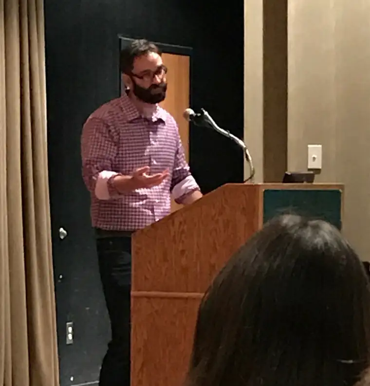

Our society is walking hastily toward the edge of a cliff, warned popular conservative blogger Matt Walsh recently at a Collegians for Life event at North Dakota State University.
During his “Defending Life” presentation, the former radio talk-show host said, “We live in this hollow culture where nothing is sacred, and nothing means anything.” He mentioned the recent Baptist church shooting in Texas that killed 26 as one of many examples. Walsh said it’s imperative we bring those who’ve lost sight of the sacred “back to the rabbit hole” to face “the sacred mysteries” and “the truth that’s inside them.”
I’m with Walsh in seeing that ultimately, the degradation of our society — “the emptiness, indifference and despair” — is linked to our denial of God. This doesn’t mean we hate those who deny God; rather, that we love them and want better for them.
He also reminded me why I so often broach pro-life issues here, noting that one effect of our godlessness has been a tragic willingness to sacrifice the most innocent, pure and beautiful segment of our society — our children — through abortion.
“When a culture begins to die, children always do poorly,” Walsh said, pointing to the Aztec Empire, a now-extinct pagan civilization that killed thousands of its young in the most gruesome fashion.
Evil societies kill their children, he suggested, “because we cannot bear the light that shines from them. We hate them because they’re so close to God and we hate God most of all.”
On some level, everyone knows abortion is wrong because “truth is so innate and ingrained that it lives inside everyone,” he said, adding that abortion “flies in the face of everything we know and believe as human beings…that life is sacred.”
Most at least recognize this sacredness in ourselves, or in “trees and dogs…or an unborn bald eagle,” he said. But many don’t apply the principle consistently. “They’re afraid of the sacredness of life, and to admit their own lives are sacred.”
Doing so, after all, can lead to realities that are frightening to face, he said, like heaven and hell, and “having been created by a force beyond our understanding.” It would require changing our lives, and too many are “unwilling to take that trip,” so they instead “cling onto whatever they can.”
Walsh offered that, like Hernan Cortes, who conquered the Aztecs and brought Christianity to Mexico, we faithful must pledge to stand for truth and righteousness, no matter the cost. “Our culture is apathetic, so we should be passionate. Our culture hates truth so we should love it obsessively,” he said.
Whatever our culture is, Walsh concluded, we must become the very opposite. “The darker (our culture) becomes, the brighter our lights will shine, and that’s our way forward.”
[For the sake of having a repository for my newspaper columns and articles, I reprint them here, with permission, a week after their run date. The preceding ran in The Forum newspaper on Nov. 18, 2017.]